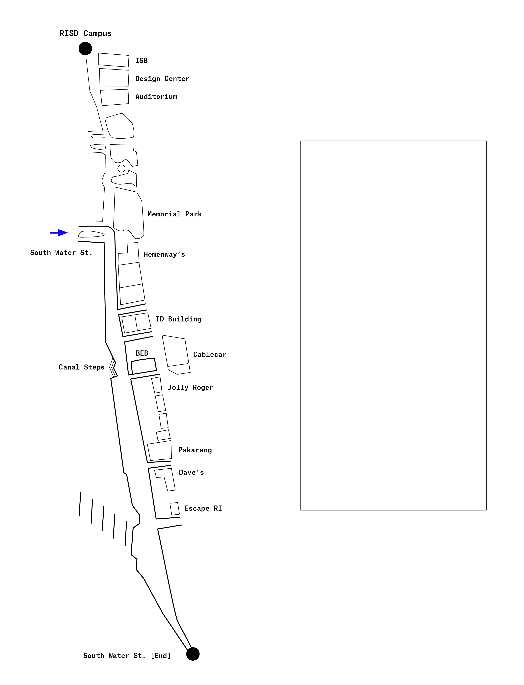

Retracing
South Water
Street
A Memory Map Archive:
As a passageway of transition between downtown Providence and Fox Point, South Water Street is riddled with the experiences, feelings, and memories of various travellers. Each map contains a digitally drawn path to a certain event on Southwater Street remembered by each participant, added as an addition to the memory archive.
Add
to
Memory Archive:
- Envision one specific memory of walking down South Water Street.
- On the map, draw a line representing what you remember of your path of motion.
- Mark out one or more specific locations where a certain event occurred. Type out your story in the box.
- Print out your map and add to the stack. You may take another map with you.